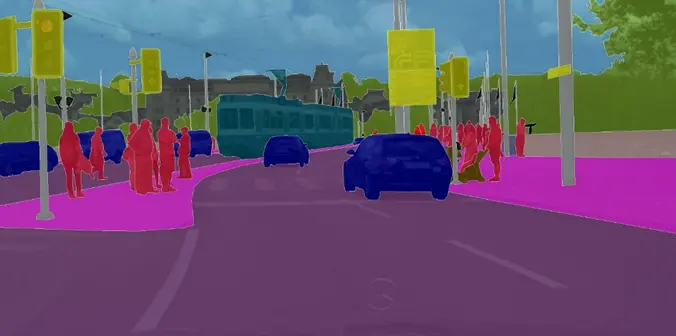
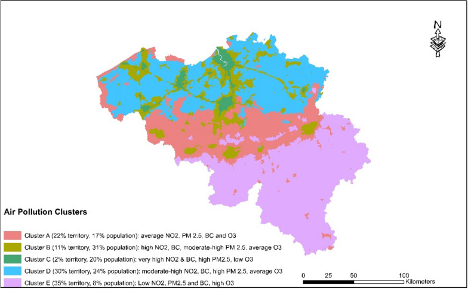
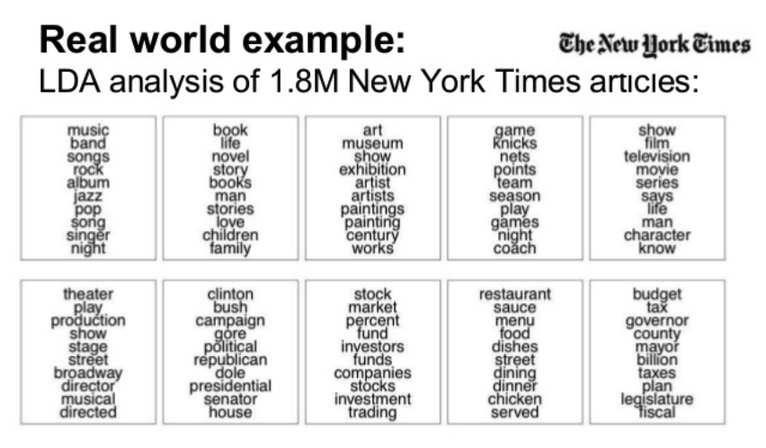
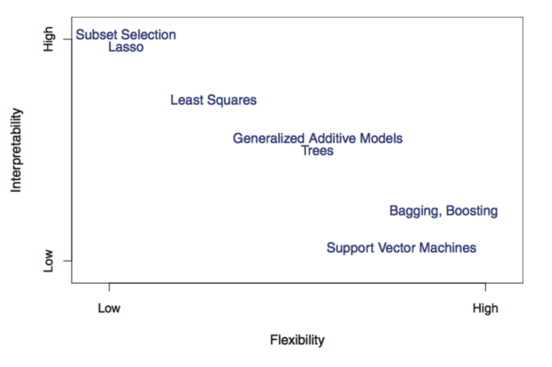
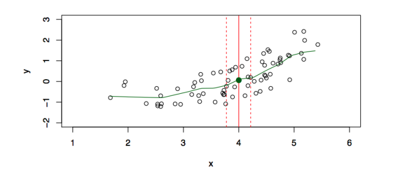
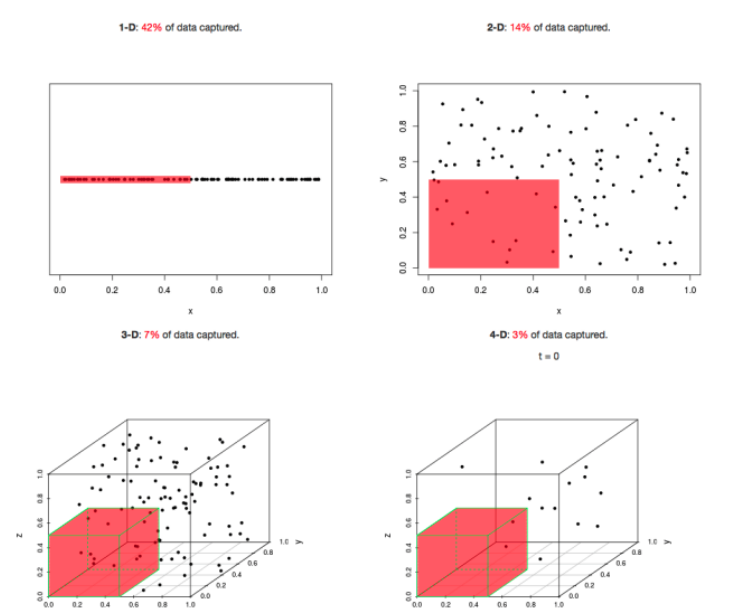
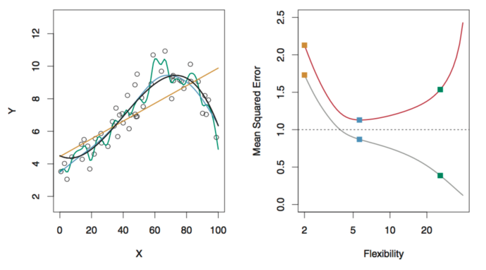

Welcome to Statistical Machine Learning
What is machine learning?
Machine learning is the science of learning patterns from data.
The goal is to use data to:
- understand relationships between variables
- make predictions for new observations
- discover hidden structures in data
Examples:
- Predict whether a patient will respond to a treatment
- Predict house prices from characteristics
- Identify spam emails
- Group customers based on purchasing behaviour
Types of Machine Learning Problems
Supervised Learning: Machine is given data and examples of what to predict.
Unsupervised Learning: Machine is given data, but not what to predict.
Reinforcement Learning: Machine gets data by interacting with an environment and tries to minimize cost.
The Basics of Supervised Learning
We have an outcome measurement, \(Y\) (also called the dependent variable, response, or target).
We have a vector of \(p\) predictor measurements, \(X\) (also called the inputs, regressors, covariates, features, or independent variables).
We have training data \((x_1, y_1), (x_2, y_2), ..., (x_n, y_n)\) which are observations (also called instances or realizations) of the measurement \((X,Y)\).
In regression problems, \(Y\) is quantitative (e.g. price, blood pressure).
In classification problems, \(Y\) takes values in a finite, unordered set (survived/died, digit 0-9, cancer class of tissue sample)
Main Tasks in Supervised Learning
On the basis of the training data, we would like to:
- Prediction: accurately predict future outcomes (\(Y\)).
- Estimation: understand how features (\(X\)) affect the outcome (\(Y\)).
- Model Selection: find the best model for predicting the outcome (\(Y\)), or which features (\(X\)) affect the outcome (\(Y\)).
- Inference: assess the quality of our prediction, estimation, and model selection.
Examples of Supervised Learning
Spam Emails Detection
Consider a dataset consisting of 4600 emails sent to an individual.
- Each is labeled as spam or email
The goal is to build a customized spam filter.
We use the relative frequency of 57 words and punctuation marks in the email as features.
| Spam |
0 |
2.26 |
0.02 |
0.54 |
0.51 |
0.01 |
0.28 |
| Email |
1.27 |
1.27 |
0.90 |
0.07 |
0.11 |
0.29 |
0.01 |
Examples of Supervised Learning
Detecting Skin Cancer from Images
Traditionally, melanoma (skin cancer) has been detected through painful and time-consuming biopsies.
Recently new methods have emerged which use computer-aided detection for early melanoma diagnosis.
The machine learning models were trained using image data.

Gouda, W., Sama, N. U., Al-Waakid, G., Humayun, M., & Jhanjhi, N. Z. (2022). Detection of skin cancer based on skin lesion images using deep learning. Healthcare, 10(7), 1183. https://doi.org/10.3390/healthcare10071183
Examples of Supervised Learning
Detect Numbers in a Handwritten Postal Code

Examples of Supervised Learning
Recommender Systems

Examples of Supervised Learning
Speech-to-Text, Personal Assistants, Speech Identification

The Basics of Unsupervised Learning
We have a set of features, \(X\), measured on a sample.
We do not have an outcome variable, \(Y\).
The objective is more ambiguous
- find groups of samples that behave similarly
- find features that behave similarly
- find linear combinations of features with the most variation
It is difficult to assess the quality of the model
Different from supervised learning, but can be useful as a pre-processing step for supervised learning
Examples of Unsupervised Learning
Image Segmentation
The goal is to cluster pixels into image regions to make it easier to analyze and understand specific parts of the image.

Examples of Unsupervised Learning
Clustering
Grouping unlabeled data points into clusters based on their similarities.

Vandeninden, B., De Clercq, E. M., Devleesschauwer, B., Otavova, M., Bouland, C., & Faes, C. (2024). Cluster pattern analysis of environmental stressors and quantifying their impact on all-cause mortality in Belgium. BMC Public Health, 24(1). https://doi.org/10.1186/s12889-024-18011-0
Examples of Unsupervised Learning
Natural Language Processing

Introduction to Supervised Learning
This Course
In much of this course, we focus on supervised learning, where we are given
- Training Set \({(x_1, y_1), ..., (x_n, y_n)}\) consisting of \(n\) samples of
- features \(x_1, ..., x_n \in X\) and corresponding
- outcome \(y_1, ..., y_n \in Y\)
The goal is to learn a predictor (function/mapping) \(f: X \rightarrow Y\) such that for a new point \(x^* \in X\),
\[f(x^*) \approx y^*\]
The Function, \(f\)
Imagine the underlying generating mechanism between \(X\) and \(Y\) as \[Y = f(X) + \epsilon\]
where \(\epsilon\) represents some measurement errors and other discrepancies.
We are given the training data \(D^{train}\) consisting of \(n\) i.i.d samples of \((X,Y)\) following the above model, that is, \((x_1, y_1), ..., (x_n, y_n)\).
Our goal is to estimate (or learn) the mapping/function \(f\) based on \(D^{train}\).
Example: Advertising
We are given information of \(n\) products.
For each product, we are given:
- \(y_i\): Sales of product \(i\) in 200 different markets
- \(x_{i1}\): TV advertising budget of product \(i\)
- \(x_{i2}\): Radio advertising budget of product \(i\)
- \(x_{i3}\): Newspaper advertising budget of product \(i\)
Suppose the true generating model is \[
\begin{aligned}
Y &= f(X) + \epsilon \\
&= \beta_0 + \beta_1X_1 + \beta_2X_2 + \beta_3X_3 + \epsilon
\end{aligned}
\]
Knowing \(f\) helps to understand how sales changes if we increase one unit of the TV advertising budget (\(X_1\)).
Why Estimate \(f\)?
Prediction
Given a new point \(X^* = x^*\), \(\hat{f}(x^*)\) is the best prediction one can hope for with respect to certain criterion.
Examples:
- Predict a patient’s risk of disease based on their characteristics.
- Predict when machinery will break down.
Inference
We want to understand relationships between \(X\) and \(Y\).
Examples:
- Which variables are important?
- How does changing \(X\) affect \(Y\)?
- What is the strength of association?
Estimating \(f\)
Let \(x_{ij}\) denote the value of the \(j^{th}\) feature for observation \(i\), where \(i=1,2,...,n\) and \(j=1,2,...,p\).
Let \(y_i\) denote the response variable for the \(i^{th}\) observation.
Then, the training data consists of \(D^{train} = \{(x_1,y_1), ..., (x_n, y_n)\}\), where \(x_i = (x_{i1}, ..., x_{ip})^T\)
There are two categories of approaches to estimate \(f\) based on \(D^{train}\):
- Parametric method
- Non-parametric method
Estimating \(f\)
Parametric method
Step 1: Make an assumption about the function form, or shape, of \(f\).
Step 2: Use the training data to fit (or train) the model.
Example: Linear Model
The linear model is an important example of a parametric model.
\(Y = f(X) + \epsilon\), with \(f(X) = \beta_0 + \beta_1X_1 + \beta_2X_2 + ... + \beta_pX_p\).
We would estimate \(f\) by \[\hat{f}_{linear}(X) = \hat{\beta_0} +\hat{\beta_1}X_1 + ... + \hat{\beta_p}X_p.\]
Note: constructing \(f\) in this way reduces the problem of estimating a function to that of estimating (p+1) parameters
Estimating \(f\)
Parametric method
Example: Linear Model
\[\hat{f}_{linear}(X) = \hat{\beta_0} +\hat{\beta_1}X_1 + ... + \hat{\beta_p}X_p.\]
The procedure of obtaining \(\hat{\beta_0}, ..., \hat{\beta_p}\) is called fitting, i.e. fitting the model to the training data.
Even for the same parametric model, there are different ways of fitting! We will come back to this later.
A Toy Example
Linear model
\[
\widehat f_{\text{linear}}(X)
=
\widehat\beta_0 + \widehat\beta_1 X
\]
A Toy Example
Quadratic model
\[
\widehat f_{\text{quad}}(X)
=
\widehat\beta_0
+
\widehat\beta_1 X
+
\widehat\beta_2 X^2
\]
Trade off Between Complexity and Interpretability
The more complex the model, the more flexible to fit \(f\), but less interpretable.
Linear models are easy to interpret, neural networks are not.
Interpretation means to understand how the predictors X contribute to predicting Y.
Trade off Between Complexity and Interpretability

Estimating \(f\)
Non-Parametric method
These methods do not make explicit assumptions about the functional form of \(f\). Instead, we let the data determine the shape more directly.
Example: Nearest Neighbours
The goal is to predict \(X = x\) using \(N(x)\), which is some neighbourhood of \(x\).
\[\hat{f}(x) = \frac{1}{|N(x)|} \sum_{i:x_i \in N(x)} y_i\]
In simple terms, the prediction is the average response of nearby observations.
Estimating \(f\)
Non-Parametric method

Estimating \(f\)
Non-Parametric method
There are other, more sophisticated methods as well, such as kernel regression and spline regression.
Pros
- we don’t make assumptions on \(f\)
- it’s good at predicting for large \(n\) and small \(p\), e.g. p \(\leq\) 4
Cons
- poor performance when \(p\) is large
- curse of dimensionality: There are very few data points in the nearby neighbours when \(p\) is large
Curse of Dimensionality

Model Selection
“All models are wrong, but some are useful” George Box
We need a systematic way of choosing the best model.
We start with the regression problems where \(Y\) is continuous.
Model Selection: Regression
Recall the setup: \[ Y = f(X) + \epsilon \]
and \(D^{train}\) contains \(n\) i.i.d samples of \((X,Y)\).
Given any \(\hat{f}\), ideally, we want to evaluate \(\hat{f}\) by the expected mean squared error (MSE) \[E\left[(Y^* - \hat{f}(X^*))^2 \right]\]
where
- \((X^*, Y^*)\) is a new random pair that is independent of \(D^{train}\)
- the expectation is taken w.r.t the random pair \((X^*, Y^*)\), as well as the randomness in \(\hat{f}\).
Model Selection: Regression
We cannot compute the expected MSE as we do not know either the distribution of \((X^*, Y^*)\), or that of \(D^{train}\).
One natural option is to use \(D^{train}\) to approximate the expectation by \[MSE(\hat{f}) = \frac{1}{n} \sum_{i=1}^n (y_i - \hat{f}(x_i))^2\]
This is called the training MSE, as it uses \(D^{train}\)
However, it is NOT a valid metric of the fit for \(\hat{f}\) since it always favours more complex models.
Model Selection: Regression
Test data refers to the data which is not used to train the statistical model
Suppose we have the test data \(D_{test}\) containing \({(x_{T1}, y_{T1}), ..., (x_{Tm}, y_{Tm})}\). Then, we can compute the test MSE as
\[MSE_T(\hat{f}) = \frac{1}{m} \sum_{i=1}^m (y_{Ti} - \hat{f}(x_{Ti}))^2\]
Instead of using the training MSE, we should look at the test MSE. I.e. we select the model which yields the smallest test MSE.
How to calculate \(MSE_T(\hat{f})\)?
- If test data is available, we can directly compute it
- Otherwise, we use a resampling technique called cross-validation which we will discuss in another lecture
Training MSE vs. Test MSE

Left Plot: Data simulated from \(f\), shown in black. Three estimates of \(f\) are shown: the linear regression line (orange), and two non parametric fits (blue and green).
Right Plot: Training MSE (grey), test MSE (red), and minimum test MSE over all possible methods coming from \(\epsilon\) (dashed line)
Overfitting
The training MSE decreases as \(\hat{f}\) gets more complex.
A highly complex \(\hat{f}\) can lead to a phenomenon knows as overfitting the data, which essentially means it follows the noise \(\epsilon\) too closely.
A Simple Example: \(\hat{f}(x_i) = y_i\) for all \(1 \leq i \leq n\)
Overfitting Example
The points do not lie exactly on \(f\) because of the random noise, \(\epsilon\).
Back to the Test MSE
There is a tradeoff between the test MSE and the flexibility (complexity) of the fitted model, \(\hat{f}\).
Is there a universal rule or explanation about this?
Bias-Variance Decomposition
Let \((X^*, Y^*)\) be a new random pair (independent from \(D^{train}\)) following \(Y^* = f(X^*) + \epsilon^*\) with \(E[\epsilon^*]=0\).
For any estimator \(\hat{f}\) (obtained from \(D^{train}\)), its conditional expected MSE at any \(X^* = x^*\) is
\[
\begin{aligned}
\mathbb{E}\left[
\left(Y_* - \hat{f}(X_*)\right)^2
\mid X_* = x_*
\right]
&=
\underbrace{
\operatorname{Var}\left(\hat{f}(x_*)\right)
}_{\text{Variance}}
+
\underbrace{
\left(
\mathbb{E}\left[\hat{f}(x_*)\right] - f(x_*)
\right)^2
}_{\text{Bias}^2}
+
\underbrace{
\operatorname{Var}(\epsilon_*)
}_{\text{Irreducible error}}
\\[0.5em]
&\geq \operatorname{Var}(\epsilon_*).
\end{aligned}
\]
- the first expectation is over \(\epsilon^*\) as well as \(D^{train}\)
- the expected MSE \(\geq\) the irreducible error
- an ideal \(\hat{f}\) should minimize the expected MSE
Bias-Variance Tradeoff
Variance: how much \(\hat{f}\) would change if we estimated it using a different training data set
Bias: the systematic difference between our estimated relationship \(\hat{f}\) and the true relationship \(f\)
- Example: If the true relationship is nonlinear but we fit a linear model, a straight line cannot fully capture the true relationship, resulting in bias.
Bias-Variance Tradeoff
As the complexity (i.e. flexibility) of \(\hat{f}\) increases, the variance of \(\hat{f}\) typically increases whereas its bias decreases
The variance of any fitted model also depends on the sample size, \(n\), and is roughly proportional to \(\frac{\text{complexity of} \quad \hat{f}}{n}\)
When \(n\) is small, a fitted model with high complexity performs poorly due to large variance
When \(n\) is large enough, a more complex fitted model tends to perform better as they have smaller bias than simpler models
Bias-Variance Tradeoff
Choosing the compelxity of \(\hat{f}\) based on the expected MSE involves a bias-variance tradeoff.
When two models, \(\hat{f_1}\) and \(\hat{f_2}\) have similar expected MSEs, we usually prefer the more parsimonious (less complex) one.
Why? The additional complexity provides little improvement in prediction, while potentially making the model less interpretable and more variable.
Model Selection: Classification
The MSE is only appropriate for a quantitative outcome.
One metric we can use for categorical or ordinal outcomes is the expected error rate, defined as
\[E[1 \{Y \neq \hat{f}(X) \}].^1\]
Model Selection: Classification
Analogously, the training error rate is \[\frac{1}{n} \sum_{i=1}^n 1 \{y_i \neq \hat{f}(x_i) \}\]
And the test error rate is \[\frac{1}{m} \sum_{i=1}^m 1 \{y_{Ti} \neq \hat{f}(x_{Ti}) \}\]
Of course, there also exist other metrics that can be used for classification problems.
Summary
- Supervised vs. unsupervised learning
- The goal with supervised learning is to estimate a function \(f\) based on the training data for prediction or inference
- To estimate \(f\), we can use parametric (assume a model) or non-parametric (data-driven) methods
- To choose the best model, we use a metric for evaluating a given \(\hat{f}\)
- The best model yields the smallest expected test MSE (or error rate for classification problems)
- Bias-Variance tradeoff: a more complex/flexible \(\hat{f}\) has a smaller bias but larger variance
Next Class: Some algorithms of computing \(\hat{f}\)!
Announcements: No tutorial on Monday, Sept 14.